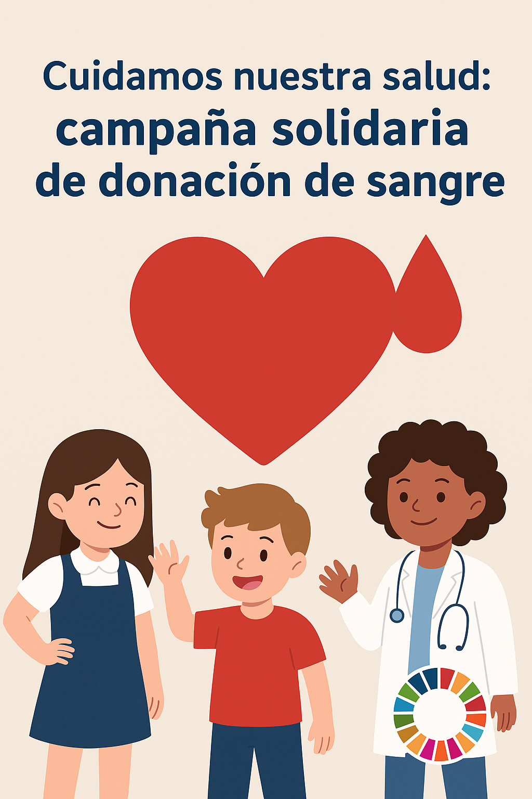

Tu Salud Importa
TU SALUD IMPORTA
Glosario de términos
Actividad física
Movimientos del cuerpo como caminar, correr, bailar o jugar, que ayudan a estar sanos
Adicción
Cuando usamos demasiado algo (por ejemplo, pantallas o dulces y nos cuesta dejarlo aunque no sea bueno.
Adolescencia
Etapa de la vida después de la pubertad, en la que seguimos creciendo y cambiando.
Alimentación Saludable
Comer variado y equilibrado para cuidar nuestro cuerpo y tener energía.
Alimentación sostenible
Comer de forma que cuida nuestra salud y también al planeta, eligiendo productos locales y evitando desperdicios.
Bienestar
Sentirse bien física, mental y socialmente.
Ciberacoso
Cuando alguien molesta, insulta o amenaza a otra persona usando internet o redes sociales.
Concentración
Capacidad de prestar atención a una tarea sin distraerse.
Donación de sangre
Cuando una persona da un poco de su sangre para ayudar a otras personas enfermas o que han sufrido un accidente.
Energía
Fuerza que nos da la comida y que necesitamos para movernos, crecer y pensar.
Equilibrado/a
Que tiene la cantidad justa de cada cosa, sin que sobre ni falte.
Emociones
Sentimientos como alegría, tristeza, miedo o enfado.
Hábitos saludables
Costumbres que ayudan a estar sanos, como comer bien, dormir suficiente o hacer ejercicio.
Huella digital
La información que dejamos en internet al publicar o compartir cosas.
Nutrientes
Sustancias de los alimentos (como proteínas o vitaminas) que nuestro cuerpo necesita para vivir y crecer.
ODS
Metas de la ONU para mejorar la vida de las personas y cuidar el planeta.
ODS nº 3
(Salud y bienestar): Objetivo que busca que todas las personas tengan buena salud y se sientan bien.
Pantallas
Aparatos electrónicos como la tele, el móvil, la tablet o el ordenador.
Privacidad
Derecho a mantener en secreto nuestra información personal.
Proteinas
Nutrientes que ayudan a crecer y a que nuestros músculos estén fuertes.
Pubertad
Etapa en la que el cuerpo de niños y niñas cambia para hacerse adulto.
Sostenible
Que se puede mantener en el tiempo sin hacer daño al planeta.
Sueño
Tiempo que pasamos descansando y durmiendo.
Tríptico
Folleto que se dobla en tres partes y sirve para dar información de forma sencilla.
Vitaminas
Nutrientes que ayudan a que el cuerpo funcione bien y se proteja de enfermedades.
Comenzamos
La situación de aprendizaje que vas a comenzar terminará con la creación de un tríptico informativo.
El objetivo es trabajar el ODS 3: Salud y bienestar.
Este objetivo busca que todas las personas, de todas las edades, puedan vivir de forma sana, sentirse bien y cuidar el planeta al mismo tiempo.


Vas a empezar una nueva situación de aprendizaje.
Al final harás un tríptico informativo (un folleto doblado en tres partes).
Con este trabajo vamos a aprender sobre el ODS 3: Salud y bienestar.
El ODS 3 quiere que:
-
Todas las personas vivan con salud.
-
Todas las personas se sientan bien.
-
Se cuide el planeta mientras mejoramos nuestra vida.
Obra publicada con Licencia Creative Commons Reconocimiento Compartir igual 4.0